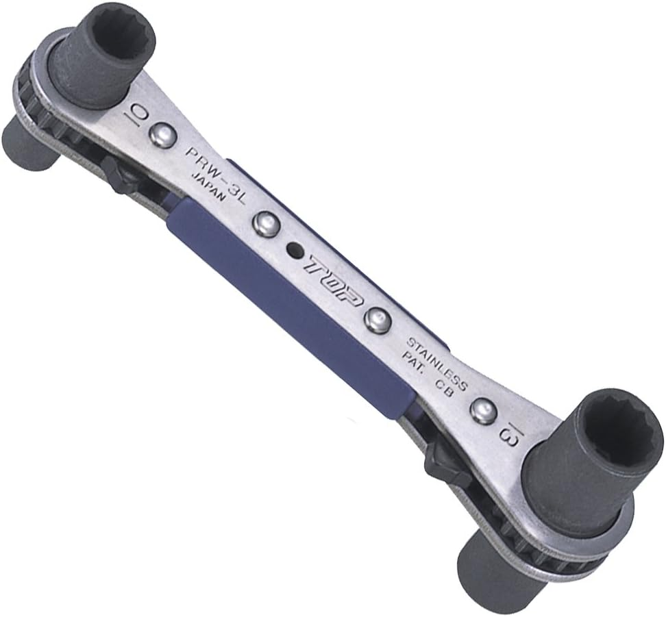

切る
線・ケーブル・金属材
工具は名前から探すより、何をしたいかで見ると選びやすくなります。最初は切る・剥く・圧着する・測るの4つから押さえると迷いにくいです。
ニッパー、ストリッパー、圧着工具、テスターなど、最初に使う場面が多い工具を整理します。
ドライバー、電工ナイフ、DINレールカッター、LANチェッカーなど、現場でよく使う工具を確認します。
充電工具、バンドソー、ケーブルカッター、アンカー固定工具など、作業量で選びたい工具を整理します。
作業内容ごとに、先に見ておくと選びやすい工具記事をまとめました。目的から記事に進みたい時の入口として使ってください。
初心者でも実務者でも、使用頻度が高く、作業内容で違いが出やすい工具から並べています。
記事が増えても探しやすいように、基本工具 → 配線・確認 → 加工・固定 → 周辺工具 の順で並べます。

切れ味・持ちやすさ・仕上がりの違いを、用途別に整理します。
読む
つかむ・曲げる・押さえる作業で使うペンチやプライヤーを整理します。
読む
被覆を剥く作業を安定させるために、サイズや使い方の違いを整理します。
読む
裸端子、絶縁端子、CE、フェルールなど、端子別に選びやすく整理します。
読む
端子サイズ、芯線の入り方、被覆長さなど、圧着前に確認したいポイントを整理します。
読む
電圧・導通・抵抗の確認など、現場で迷いやすい基本を整理します。
読む
テスターとの違い、点検で何が分かるか、必要な人の目安を整理します。
読む
手回しと充電工具の使い分け、盤内作業で見たいポイントを整理します。
読む
ストリッパーとの違いや、太物の被覆処理で使う場面を整理します。
読む
現場で工具を持ち歩きやすくする腰道具や工具差しを整理します。
読む
腰まわりの収納や工具の持ち運びをしやすくするセフボックス系を整理します。
読む
ドリルドライバとインパクトドライバを、作業内容で使い分けます。
読む
ドリルチャック、ステップドリル、面取りなど、周辺工具をまとめています。
読む
手動・ラチェット・充電式を、太さや作業量で選びやすく整理します。
読む
スチールや通線ワイヤーなど、配管入線で使う工具を整理します。
読む
通線工具を使う前後で押さえたい、配管入線の実務ポイントを整理します。
読む
金属材、ダクト、ボルト切断など、必要かどうかを作業内容で判断します。
読む
金ノコやグラインダーとの違い、導入するタイミングを整理します。
読む
ラック加工、全ネジ切断、鉄板加工で使いやすい充電工具を整理します。
読む
盤やボックスの穴あけで使う場面、向き不向きを現場条件で整理します。
読む
ハンマドリルや補助工具を、電気工事の固定作業目線で整理します。
読む
ラック固定やボルト締めで使いやすいラチェットレンチを整理します。
読む
導通、結線ミス、1〜8の確認など、分かること・分からないことを整理します。
読む
高さだけでなく、作業内容や安全面から選ぶための目安を整理します。
読む工具カテゴリは、実際に現場で使うものを中心に、用途別に細かく増やしていくページです。